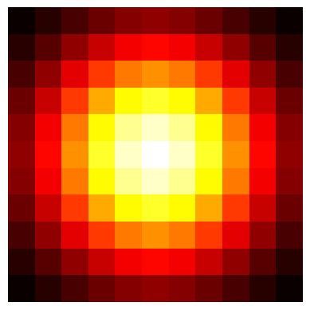
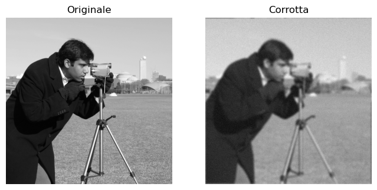
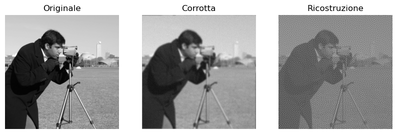
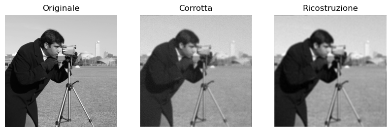
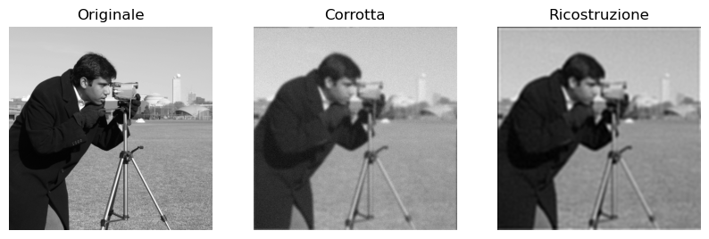
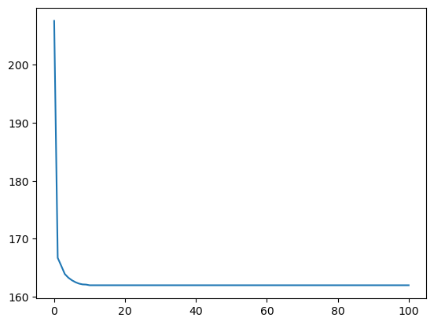

from ProblemiInversi import operators, solvers, utilities
import numpy as np
import matplotlib.pyplot as plt
from skimage import data
# Lettura dei dati da skimage
x = data.camera()
nx, ny = x.shape
# Normalizzazione (nel range [0, 1])
x = x / x.max()
# Definizione kernel di blur e operatore associato
kernel = utilities.gaussian2d_kernel(k=11, sigma=3)
A = operators.ConvolutionOperator(kernel)
# Visualizzazione kernel di blur (PSF)
plt.imshow(kernel, cmap='hot')
plt.axis('off')
plt.show()
# Sfocatura dell'immagine e aggiunta di rumore
y = A(x)
y_delta = y + utilities.gaussian_noise(y, noise_level=0.05)
# Visualizzazione problema test
plt.figure(figsize=(8, 4))
plt.subplot(1, 2, 1)
plt.imshow(x, cmap="gray")
plt.title("Originale")
plt.axis("off")
plt.subplot(1, 2, 2)
plt.imshow(y_delta, cmap="gray")
plt.axis("off")
plt.title("Corrotta")
plt.show()


# CGLS
cgls_solver = solvers.CGLS(A)
# Scelta di x0, kmax, atolf, tolx
x0 = np.zeros_like(x)
kmax = 30
tolf = 1e-8
tolx = 1e-8
# Soluzione
x_cgls = cgls_solver.solve(y_delta, x0, kmax, tolf, tolx)
# Visualizzazione ricostruzione
plt.figure(figsize=(10, 4))
plt.subplot(1, 3, 1)
plt.imshow(x, cmap="gray")
plt.title("Originale")
plt.axis("off")
plt.subplot(1, 3, 2)
plt.imshow(y_delta, cmap="gray")
plt.axis("off")
plt.title("Corrotta")
plt.subplot(1, 3, 3)
plt.imshow(x_cgls, cmap="gray")
plt.axis("off")
plt.title("Ricostruzione")
plt.show()

# Tikhonov
# Scelta parametri Tikhonov (L e lambda)
L = operators.Identity()
lmbda = 1
# Costruzione operatore di Tikhonov
M = operators.TikhonovOperator(A, L, lmbda)
# Definizione dati estesi ybar e ybar_delta
ybar = np.pad(y, ((0, 512), (0, 0)))
ybar_delta = np.pad(y_delta, ((0, 512), (0, 0)))
# Solver CGLS + Tikhonov
cgls_tik_solver = solvers.CGLS(M)
# Scelta di x0, kmax, tolf, tolx
x0 = np.zeros_like(x)
kmax = 100
tolf = 1e-8
tolx = 1e-8
# Soluzione
x_tik = cgls_tik_solver.solve(ybar_delta, x0, kmax, tolf, tolx)
# Visualizzazione ricostruzione
plt.figure(figsize=(10, 4))
plt.subplot(1, 3, 1)
plt.imshow(x, cmap="gray")
plt.title("Originale")
plt.axis("off")
plt.subplot(1, 3, 2)
plt.imshow(y_delta, cmap="gray")
plt.axis("off")
plt.title("Corrotta")
plt.subplot(1, 3, 3)
plt.imshow(x_tik, cmap="gray")
plt.axis("off")
plt.title("Ricostruzione")
plt.show()

# Tikhonov Gradiente
# Scelta parametri Tikhonov (L e lambda)
L = operators.Gradient()
lmbda = 1
# Costruzione operatore di Tikhonov
M = operators.TikhonovOperator(A, L, lmbda)
# Definizione dati estesi ybar e ybar_delta
ybar = np.pad(y, ((0, 1024), (0, 0)))
ybar_delta = np.pad(y_delta, ((0, 1024), (0, 0)))
# Solver CGLS + Tikhonov
cgls_tik_solver = solvers.CGLS(M)
# Scelta di x0, kmax, tolf, tolx
x0 = np.zeros_like(x)
kmax = 100
tolf = 1e-8
tolx = 1e-8
# Soluzione
x_tik = cgls_tik_solver.solve(ybar_delta, x0, kmax, tolf, tolx)
# Visualizzazione ricostruzione
plt.figure(figsize=(10, 4))
plt.subplot(1, 3, 1)
plt.imshow(x, cmap="gray")
plt.title("Originale")
plt.axis("off")
plt.subplot(1, 3, 2)
plt.imshow(y_delta, cmap="gray")
plt.axis("off")
plt.title("Corrotta")
plt.subplot(1, 3, 3)
plt.imshow(x_tik, cmap="gray")
plt.axis("off")
plt.title("Ricostruzione")
plt.show()

# Total Variation con Discesa Gradiente
# Solver per Total Variation
gd_tv_solver = solvers.GDTotalVariation(A, beta=1e-3)
# Scelta parametri TV (beta e lambda)
beta = 1e-3
lmbda = 1e-2
# Scelta di x0, kmax, tolf, tolx
x0 = np.zeros_like(x)
kmax = 100
tolf = 1e-8
tolx = 1e-8
# Soluzione
x_TV, obj_val, grad_norm = gd_tv_solver.solve(y_delta, lmbda, x0, kmax, tolf, tolx)
# Visualizzazione ricostruzione
plt.figure(figsize=(10, 4))
plt.subplot(1, 3, 1)
plt.imshow(x, cmap="gray")
plt.title("Originale")
plt.axis("off")
plt.subplot(1, 3, 2)
plt.imshow(y_delta, cmap="gray")
plt.axis("off")
plt.title("Corrotta")
plt.subplot(1, 3, 3)
plt.imshow(x_TV, cmap="gray")
plt.axis("off")
plt.title("Ricostruzione")
plt.show()
---------------------------------------------------------------------------
KeyboardInterrupt Traceback (most recent call last)
Cell In[5], line 17
14 tolx = 1e-8
16 # Soluzione
---> 17 x_TV, obj_val, grad_norm = gd_tv_solver.solve(y_delta, lmbda, x0, kmax, tolf, tolx)
19 # Visualizzazione ricostruzione
20 plt.figure(figsize=(10, 4))
File ~/calcolo-numerico/Lezioni/InverseProblems/ProblemiInversi/solvers.py:153, in GDTotalVariation.solve(self, y, lmbda, x0, kmax, tolf, tolx)
150 df = self.grad_f(x0, y, lmbda)
152 # Scelta di alpha_k con backtracking
--> 153 alpha = self.backtracking(df, x0, y, lmbda, alpha=1)
155 # Aggiornamento x_{k+1} = x_k - alpha_k df(x_k)
156 x = x0 - alpha * df
File ~/calcolo-numerico/Lezioni/InverseProblems/ProblemiInversi/solvers.py:244, in GDTotalVariation.backtracking(self, df, x, y, lmbda, alpha, rho, c)
230 def backtracking(self, df, x, y, lmbda, alpha=1, rho=0.5, c=1e-4):
231 """
232 Algoritmo di backtracking per Discesa Gradiente.
233
(...)
241 alpha : Learning rate calcolato con backtracking.
242 """
243 while (
--> 244 self.f(x - alpha * df, y, lmbda)
245 > self.f(x, y, lmbda) + c * alpha * np.linalg.norm(df) ** 2
246 ):
247 alpha *= rho
249 if alpha < 1e-6:
File ~/calcolo-numerico/Lezioni/InverseProblems/ProblemiInversi/solvers.py:185, in GDTotalVariation.f(self, x, y, lmbda)
184 def f(self, x, y, lmbda):
--> 185 J = 0.5 * np.sum(np.square(self.A @ x - y))
186 R = self.TV_beta(x)
188 return J + lmbda * R
File ~/calcolo-numerico/Lezioni/InverseProblems/ProblemiInversi/operators.py:14, in Operator.__matmul__(self, x)
13 def __matmul__(self, x):
---> 14 return self._matvec(x)
File ~/calcolo-numerico/Lezioni/InverseProblems/ProblemiInversi/operators.py:57, in ConvolutionOperator._matvec(self, x)
51 """
52 1 - Pad the kernel K to match the shape of x
53 2 - Lunch fft_convolve between x and K
54 """
55 K_full = self.pad_kernel(self.kernel, x.shape)
---> 57 return self.fftconvolve(K_full, x)
File ~/calcolo-numerico/Lezioni/InverseProblems/ProblemiInversi/operators.py:64, in ConvolutionOperator.fftconvolve(self, x, y)
62 def fftconvolve(self, x, y):
63 xhat = fftn(x)
---> 64 yhat = fftn(y)
66 return np.real(fftshift(ifftn(xhat * yhat)))
File /opt/anaconda3/envs/teaching/lib/python3.12/site-packages/numpy/fft/_pocketfft.py:815, in fftn(a, s, axes, norm)
715 @array_function_dispatch(_fftn_dispatcher)
716 def fftn(a, s=None, axes=None, norm=None):
717 """
718 Compute the N-dimensional discrete Fourier Transform.
719
(...)
813
814 """
--> 815 return _raw_fftnd(a, s, axes, fft, norm)
File /opt/anaconda3/envs/teaching/lib/python3.12/site-packages/numpy/fft/_pocketfft.py:707, in _raw_fftnd(a, s, axes, function, norm)
705 itl.reverse()
706 for ii in itl:
--> 707 a = function(a, n=s[ii], axis=axes[ii], norm=norm)
708 return a
File /opt/anaconda3/envs/teaching/lib/python3.12/site-packages/numpy/fft/_pocketfft.py:215, in fft(a, n, axis, norm)
213 n = a.shape[axis]
214 inv_norm = _get_forward_norm(n, norm)
--> 215 output = _raw_fft(a, n, axis, False, True, inv_norm)
216 return output
File /opt/anaconda3/envs/teaching/lib/python3.12/site-packages/numpy/fft/_pocketfft.py:70, in _raw_fft(a, n, axis, is_real, is_forward, inv_norm)
67 a = z
69 if axis == a.ndim-1:
---> 70 r = pfi.execute(a, is_real, is_forward, fct)
71 else:
72 a = swapaxes(a, axis, -1)
KeyboardInterrupt:
plt.plot(obj_val)
plt.show()
